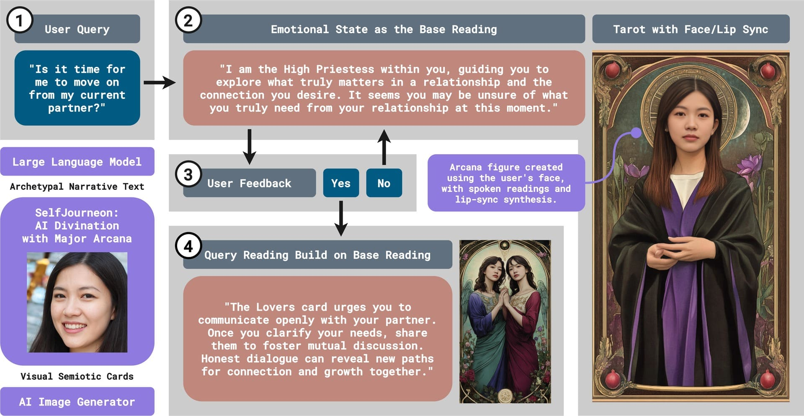
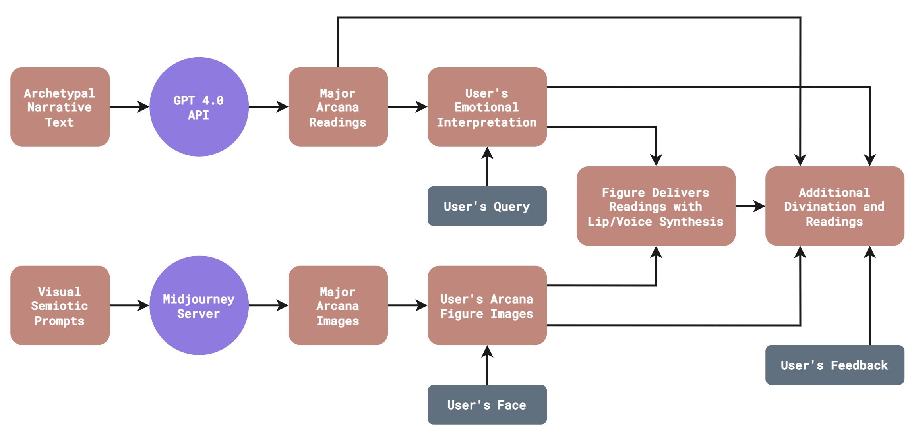

AI Divination
Artificial Empathy
Tarot Archetypes
Hero’s Journey
Facial Reenactment
Most AI divination tools reduce symbolic traditions into fixed predictions, overlooking divination’s deeper role as a practice of projection, emotional resonance, and meaning-making. SelfJourneon responds by repositioning AI from a deterministic oracle to an affective companion. Drawing on Tarot’s Major Arcana and the Hero’s Journey, the system frames divination as a ritual dialogue where archetypes serve as mirrors for psychological insight. Through facial embedding, generative visuals, and empathic prompts, SelfJourneon explores how artificial empathy can support symbolic reflection, transforming AI–human interaction into an emotionally attuned, narrative practice.
SelfJourneon operates through a three-stage interaction. The system begins by drawing a Major Arcana card based on a user’s question and portrait, establishing the archetypal frame. The user’s face is then embedded into the selected Tarot figure via facial reenactment, generating a personalized symbolic avatar. This avatar speaks through voice synthesis and metaphor-driven prompts, guiding users toward emotional clarity and reflective interpretation. Instead of offering predictions, the system uses a non-directive, empathic design—combining symbolic cues, tonal feedback, and open-ended questioning—to cultivate introspection and narrative co-creation.
